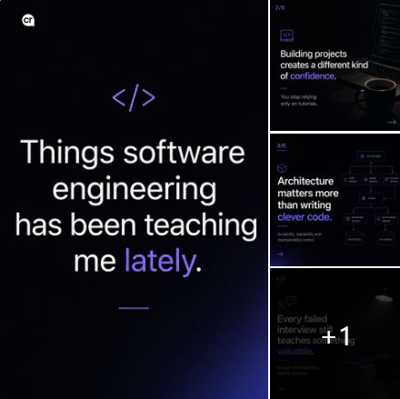
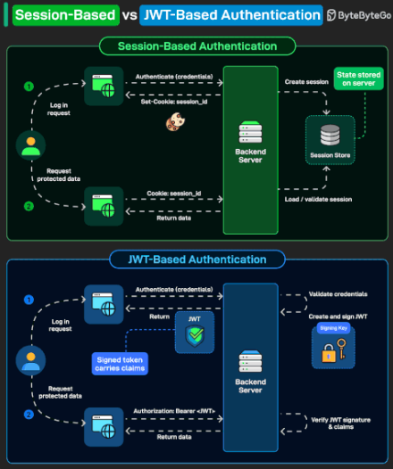
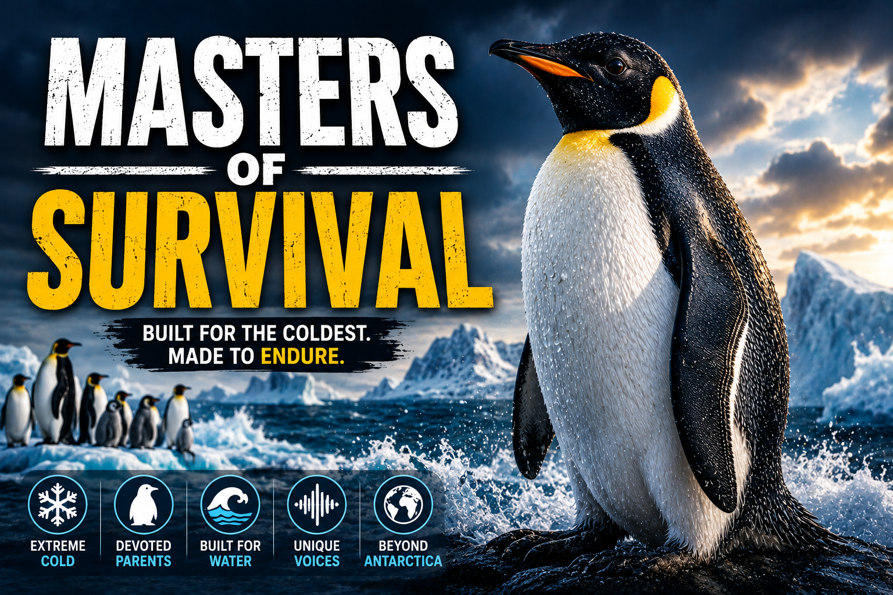

Backend Platform
E-Commerce RESTful API
Spring Boot backend project showcasing secure APIs, PostgreSQL, Kafka, Docker, Prometheus, Grafana, and CI/CD foundations.
Open Repository →
Full-Stack Java Developer
Build. Scale. Repeat.
I’m a Full-Stack Java Developer with 8+ years of experience building secure, scalable applications in fintech, payments, insurance, and automotive industries. I’ve worked with BMW Group, PPS, and Stanchion Payment Solutions, specializing in Java, Spring Boot, Kafka, PostgreSQL, React, and Docker.
I’m passionate about software architecture, clean code, and AI-driven development. My flagship project is an event-driven e-commerce platform. Outside of coding, I enjoy playing piano, exploring nature, and spending time with family and friends.
Volunteer contributor at Helping Paws In Need SA, assisting with the startup and growth of the animal welfare initiative through support for stray animals, local shelters, and donation coordination efforts.
📘 View Helping Paws In Need SA on Facebook →
I also support the Samsung Global Goals initiative, with particular focus on Life Below Water, Life on Land, and Zero Hunger.
🌍 See how you can make a difference with Samsung Global Goals →
Backend Platform
Spring Boot backend project showcasing secure APIs, PostgreSQL, Kafka, Docker, Prometheus, Grafana, and CI/CD foundations.
Open Repository →Frontend Dashboard
React and TypeScript dashboard for operational visibility across orders, payments, inventory, and system health.
Open Repository →Latest Thoughts
Reflections, ideas, and lessons from my journey in tech.

A reflective post about growth, consistency, architecture, and building confidence through software engineering.
View Post →
A useful system design reference comparing session-based authentication with JWT-based authentication.
View Post →A creative post exploring AI, personal branding, tech life, and how technology can support self-expression.
View Post →
A cinematic wildlife documentary experiment combining AI narration, storytelling, editing, and educational content inspired by nature documentaries.
Watch Documentary →Freelance Software Developer / Technical Consultant (September 2025–Present)
Software Engineer (March 2025–August 2025)
Full Stack Java Developer (March 2022–December 2024)
Full Stack Java Developer (June 2021–February 2022)
Support Lead & Customer Success Developer (January 2021–May 2021)
Head of Technical Operations / Software Developer (December 2016–December 2020)
Technical Assistant & Data Administrator (2014–2016)